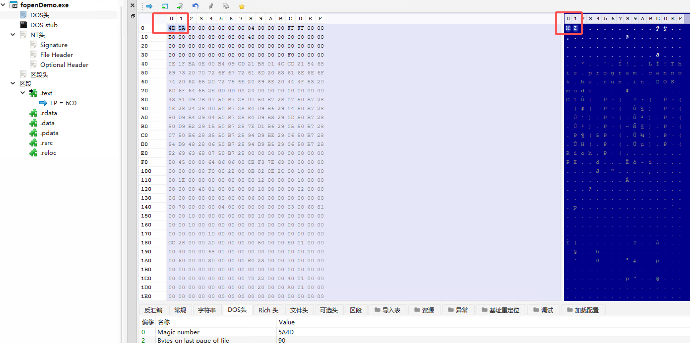
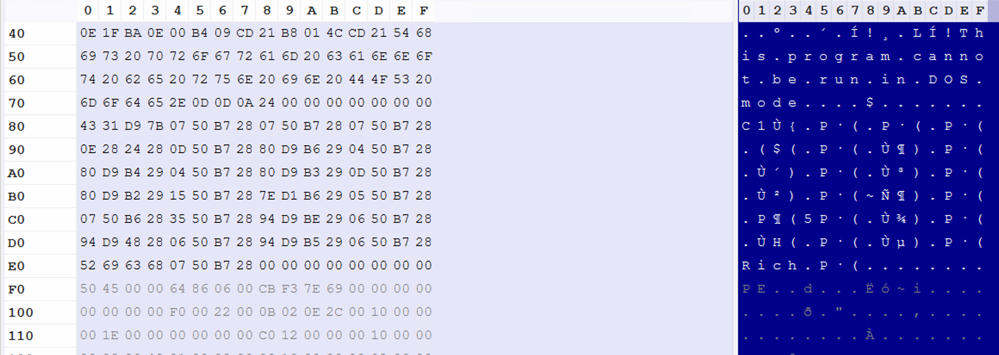
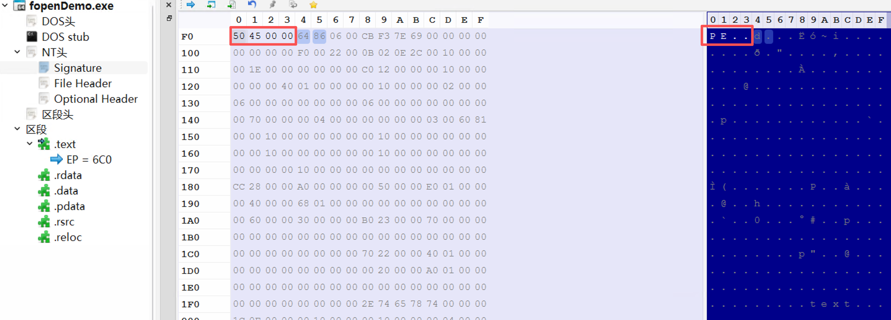
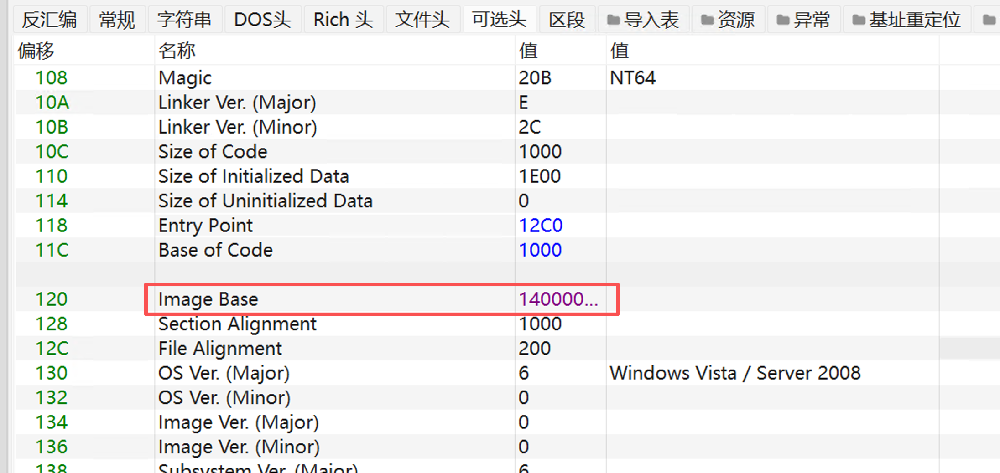
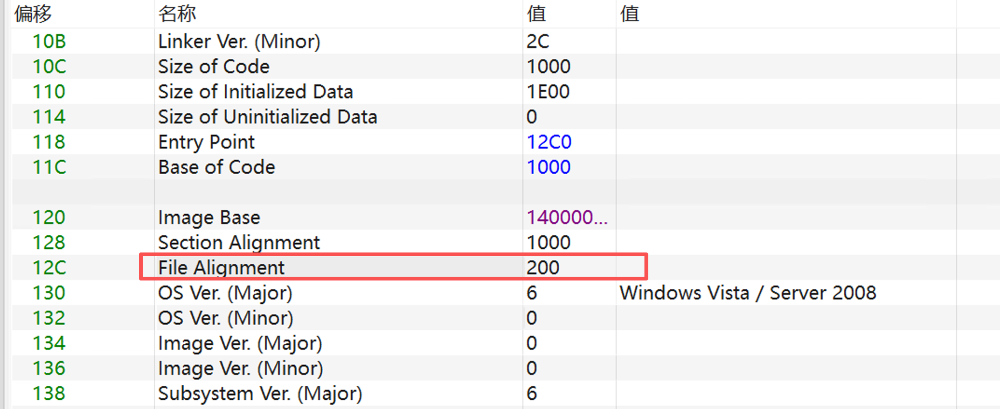
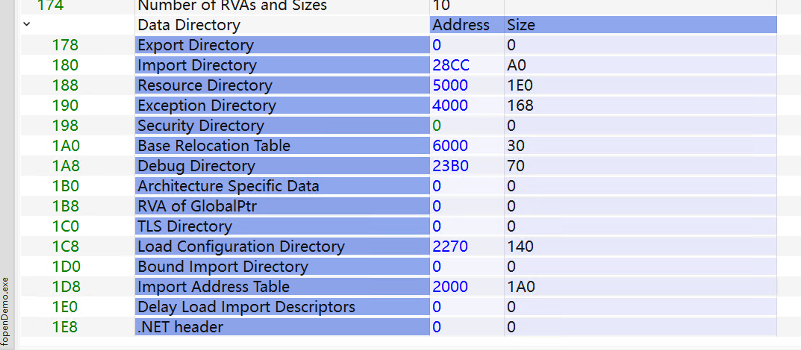

PE#
可移植性可执行文件。
PE (Portable Executable) 是 Windows 下的可执行文件格式（主要用于.exe, .dll, .sys）,主要使用在32位和64位的Windows操作系统。
硬盘上的 .exe 文件 内存中的进程 (Virtual Memory)
+-----------------+ +-----------------+
| DOS Header | -> | DOS Header |
+-----------------+ +-----------------+
| NT Headers | -> | NT Headers |
+-----------------+ +-----------------+
| Section Table | -> | Section Table |
+-----------------+ +-----------------+
| .text (Code) | -> | .text (Code) | <-- AddressOfEntryPoint 指向这
+-----------------+ | (Alignment) | <-- 内存对齐产生的空隙
| .data (Vars) | -> | .data (Vars) |
+-----------------+ +-----------------+PE 结构自上而下分为 4 个核心部分 ：

DOS头#
DOS 头 ( IMAGE_DOS_HEADER ) 是 PE 文件的第一部分，固定大小为 64 字节 (0x40)。
Microsoft 官方在 Windows SDK 头文件 ( winnt.h ) 中对 DOS 头数据结构的定义：
|
|
关键字段详解#
- e_magic (0x00 - 0x02)
-
值 : 必须是 0x5A4D 。
-
ASCII : “MZ”。纪念 Mark Zbikowski（MS-DOS 的设计者之一）。
-
作用 : 操作系统加载文件时会读取前两个字节。如果不是 “MZ”，直接报错“不是有效的 Win32 应用程序”。

PS：在小端序系统中， 低位字节存储在低地址，高位字节存储在高地址 。当你用十六进制编辑器（Hex Editor）按顺序看文件内容时，你看到的是 4D 5A （也就是 “MZ”）。但当你用 C 语言把这两个字节读成一个 WORD (整数) 时，CPU 会把它们倒过来组合，还原成 0x5A4D 。
-
e_res 和 e_res2 (保留字段)
在现代 Windows 中，这些区域完全不被使用，里面的数据通常是 0。
-
e_lfanew (0x3C - 0x40)
-
位置 : 结构体的最后 4 个字节 (偏移 60)。
-
类型 : LONG (4字节整数)。
-
指向 PE 头 (NT Headers) 的文件偏移量。它是连接 DOS 时代和 Windows 时代的桥梁。Windows 加载器读取 DOS 头后，直接跳到 e_lfanew 指向的位置去读取真正的 PE 头。
-
常见值 : 通常是 0x00000080 或 0x000000E0 ，但这不固定。你可以把它改成 0x40 （紧挨着 DOS 头），也可以改成 0x1000 （隔得很远），只要文件里对应位置有 PE 头就行。
DOS Stub (DOS 存根)#
紧跟在 IMAGE_DOS_HEADER 之后， PE Header 之前，有一段代码叫 DOS Stub。
-
内容 : 这是一段 16 位的汇编代码。
-
作用 : 当你在纯 DOS 环境下（比如 MS-DOS 6.22）运行这个 Windows exe 时，这段代码会被执行。
-
默认行为 : 打印字符串 “This program cannot be run in DOS mode.” 然后退出。

-
NT Headers#
NT Headers 结构 (IMAGE_NT_HEADERS)#
它在内存中通常位于 0xE0 左右（由 DOS 头的 e_lfanew 决定）。它是一个大结构体，里面包含了三个关键部分：
typedef struct _IMAGE_NT_HEADERS {
DWORD Signature; // [1] 签名 "PE\0\0"
IMAGE_FILE_HEADER FileHeader; // [2] 文件头 (物理属性)
IMAGE_OPTIONAL_HEADER32 OptionalHeader; // [3] 可选头 (逻辑属性)
} IMAGE_NT_HEADERS32, *PIMAGE_NT_HEADERS32;- Signature (签名) - 4字节
-
值 : 0x00004550 (ASCII: “PE\0\0”)。
-
这是 PE 文件的身份证。Windows 加载器跳到这里，先看这4个字节。如果不是 “PE\0\0”，系统就认为它不是有效的 PE 文件。

-
File Header (文件头) - 20字节
包含文件最基本的物理属性。重要字段：
-
Machine : CPU 架构。 0x014c (x86), 0x8664 (x64)。
-
NumberOfSections : 节的数量（比如 .text, .data, .rdata 加起来有几个）。
-
TimeDateStamp : 编译时间戳。非常有用的溯源信息（虽然可以伪造）。
-
SizeOfOptionalHeader : 后面那个“可选头”的大小。
-
Characteristics : 文件属性标志（是不是 DLL？是不是系统文件？）。

-
-
Optional Header (可选头) - 大小可变 (x86通常224字节)
名字叫“可选”，它告诉操作系统如何加载和运行这个文件。 重要字段：
-
AddressOfEntryPoint (OEP) : 程序入口点 RVA。程序跑起来后第一条指令在哪里？就看这里。

-
ImageBase : 建议加载基址。exe 默认是 0x400000 。
-

-
SectionAlignment : 内存对齐大小（通常 4KB）。
-
FileAlignment : 硬盘对齐大小（通常 512字节）十六进制 (0x200)=512字节。

-
DataDirectory[16] : 数据目录表 。这是通往 16 个关键数据结构的“直通车”数组：
- Index 0: 导出表 (Export Table)
- Index 1: 导入表 (Import Table) - 决定了你要调用哪些 DLL。
- Index 2: 资源表 (Resource Table) - 图标、光标、菜单。
- Index 5: 重定位表 (Relocation Table) - 用于 ASLR。
- Index 14: CLR 头 (.NET 程序专用)。

节表 (Section Table) (区段表/区段头)#
结构体 ( IMAGE_SECTION_HEADER )#
typedef struct _IMAGE_SECTION_HEADER {
BYTE Name[8]; // [1] 节名 (如 ".text", ".data")
union {
DWORD PhysicalAddress;
DWORD VirtualSize; // [2] 内存中的实际大小 (未对齐)
} Misc;
DWORD VirtualAddress; // [3] 内存中的 RVA (对齐后)
DWORD SizeOfRawData; // [4] 硬盘上的大小 (对齐后)
DWORD PointerToRawData; // [5] 硬盘上的文件偏移
DWORD PointerToRelocations; // (obj文件用，exe通常为0)
DWORD PointerToLinenumbers; // (调试用，通常为0)
WORD NumberOfRelocations; // (obj文件用)
WORD NumberOfLinenumbers; // (调试用)
DWORD Characteristics; // [6] 属性 (读/写/执行)
} IMAGE_SECTION_HEADER, *PIMAGE_SECTION_HEADER;[1] Name (8字节)
- 节的名字，如 .text , .rdata 。
- 注意 : 这只是个标记，系统加载器并不真正关心它叫什么。你可以把它改成 .hacker 甚至乱码，程序依然能跑。只要别超过8个字节。
[2] VirtualSize (内存大小) vs [4] SizeOfRawData (硬盘大小) 这俩通常不一样，这是检测**“壳”**的重要特征！
- 正常情况 : VirtualSize ≈ SizeOfRawData 。
- 加壳/压缩 : VirtualSize (比如 1MB) » SizeOfRawData (比如 100KB)。说明数据在硬盘上是压缩的，加载到内存后会解压变大。
- 未初始化变量 (.bss) : VirtualSize > 0, SizeOfRawData = 0。说明这块内存在硬盘上不占地儿，但加载到内存要占位。
[3] VirtualAddress (内存 RVA)
- 这个节加载到内存后，离 ImageBase 有多远。
- 必须是 SectionAlignment (0x1000) 的整数倍。
[5] PointerToRawData (文件偏移)
- 这个节的内容在 exe 文件里的具体位置（比如从第 1024 字节开始）。
- 必须是 FileAlignment (0x200) 的整数倍。
[6] Characteristics (属性标志) 决定了这个节的权限。由位掩码控制：
- 0x20000000 (IMAGE_SCN_MEM_EXECUTE): 可执行 (代码段必须有)
- 0x40000000 (IMAGE_SCN_MEM_READ): 可读
- 0x80000000 (IMAGE_SCN_MEM_WRITE): 可写 (数据段必须有)
节数据 (Section Data)(区段)#
这是 PE 文件的主体部分，占用了 90% 以上的体积。它们按照节表的顺序依次排列。
- 节表 (Section Table) ：是 元数据 (Metadata) 。它是一张清单，告诉系统有哪些节，每个节多大，放在哪里，有什么属性（可读/可写/可执行）。
- 节数据 (Section Data) ：是 实体数据 (Raw Data) 。它是真正存放代码（机器码）、变量、图片资源的地方。
[ PE 文件结构 ]
+-------------------+
| DOS Header |
+-------------------+
| NT Headers |
+-------------------+ <--- 1. 节表在这里 (目录)
| Section Table | 它记录了：
| - .text Header | --------+ (指向 .text 的数据位置)
| - .data Header | ------+ |
| - .rsrc Header | ----+ | |
+-------------------+ | | |
| (Padding) | | | |
+===================+ | | |
| Section Data | <---+ | |
| - .text Data | | |
| (机器码...) | | |
+-------------------+ | |
| - .data Data | <-----+ |
| (全局变量...) | |
+-------------------+ |
| - .rsrc Data | <-------+
| (图标/菜单...) |
+-------------------+
对于大多数普通的 EXE/DLL，最后一个节（通常是 .rsrc 或 .reloc ）的数据结束后，文件就到头了。